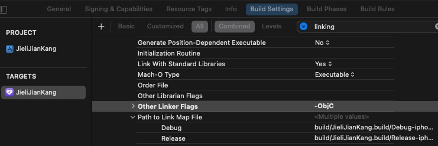

1.接入流程
1.1 支持环境
环境 |
兼容范围 备注 |
|
|---|---|---|
软件系统 |
iOS 12.0以上 |
支持BLE功能 |
固件SDK |
AC707N-WATCH-SDK,AC701N-WATCH-SDK, AC695-WATCH-SDK |
建议咨询SDK负责人 |
开发工具 |
Xcode15.0以上 |
建议使用最新版本 |
1.2 库导入
1.2.1 依赖库
ZipZap.framework ：加压缩文件
1.2.2 导入库
JL_BLEKit.framework : 蓝牙功能库
JLDialUnit.framework : 手表操作
JL_OTALib.framework : OTA升级业务库
JL_AdvParse.framework : 杰理蓝牙设备广播包解析业务库
JL_HashPair.framework ： 设备认证业务库
JLBmpConvertKit.framework : 图片格式转换库
JLLogHelper.framework : 日志库
1.2.3 必要权限
//使用蓝牙权限
Privacy - Bluetooth Peripheral Usage Description
Privacy - Bluetooth Always Usage Description
1.2.4 Xcode 配置
由于库里包含了扩展类的属性，需要在使用时配置 Other linker Flags
需要在工程的 Build Settings 中的 Other Linker Flags 添加 -ObjC。
{kind=link}

1.3 使用内部 SDK 蓝牙连接配置
1.3.1 蓝牙中心类初始化
//1、外部的引用
@property(strong,nonatomic) JL_BLEMultiple *mBleMultiple;
@property(weak ,nonatomic) JL_EntityM *mBleEntityM; //需要Weak引用，断开设备重新搜索，SDK需释放。(作为当前正在操作的设备使用)
@property(strong,nonatomic) NSString *mBleUUID;
@property(weak ,nonatomic) NSArray *mFoundArray; //需要Weak引用，扫描到的设备。
@property(weak ,nonatomic) NSArray *mConnectedArray;//需要Weak引用，已连接的设备。
//2、实例化SDK
self.mBleMultiple = [[JL_BLEMultiple alloc] init];
self.mBleMultiple.BLE_FILTER_ENABLE = YES; //过滤设备使能
self.mBleMultiple.BLE_PAIR_ENABLE = YES; //配对使能
self.mBleMultiple.BLE_TIMEOUT = 7; //连接超时时间
//3、选择需要搜索设备类型
self.mBleMultiple.bleDeviceTypeArr = @[@(JL_DeviceTypeWatch)];//只选Watch
//4、SDK搜索到的设备，点击连接后，会加入bleConnectedArr数组中。
//5、调用[self.mBleMultiple scanStart]会释放掉blePeripheralArr的JL_EntityM。
self.mFoundArray = self.mBleMultiple.blePeripheralArr;
//6、SDk已连接上的设备，断开连接后，会加入blePeripheralArr数组中。
self.mConnectedArray = self.mBleMultiple.bleConnectedArr;
//7、用mBleEntityM弱引用mConnectedArray中已连接的一个JL_EntityM设备，此后会用mBleEntity到内的【JL_ManagerM】发命令。
1.3.2 连接设备
//从已发现的设备列表里连接一个。
JL_EntityM *entity = self.mFoundArray[indexPath.row];
/**
连接设备
@param entity 蓝牙设备类
*/
[self.mBleMultiple connectEntity:entity
Result:^(JL_EntityM_Status status) {
[JL_Tools mainTask:^{
/*【status】错误码与错误原因
JL_EntityM_StatusBleOFF = 0, //BLE蓝牙未开启
JL_EntityM_StatusConnectFail = 1, //BLE连接失败
JL_EntityM_StatusConnecting = 2, //BLE正在连接
JL_EntityM_StatusConnectRepeat = 3, //BLE重复连接
JL_EntityM_StatusConnectTimeout = 4, //BLE连接超时
JL_EntityM_StatusConnectRefuse = 5, //BLE被拒绝
JL_EntityM_StatusPairFail = 6, //配对失败
JL_EntityM_StatusPairTimeout = 7, //配对超时
JL_EntityM_StatusPaired = 8, //已配对
JL_EntityM_StatusMasterChanging = 9, //正在主从切换
JL_EntityM_StatusDisconnectOk = 10, //已断开成功
JL_EntityM_StatusNull = 11, //Entity为空 */
if (status == JL_EntityM_StatusPaired) {
NSString *txt = [NSString stringWithFormat:@"连接成功:%@",deviceName];
}else{
NSString *txt = [NSString stringWithFormat:@"连接失败:%@",deviceName];
}
}];
}];
/*--- 注意事项
//mBleEntityM在文档1.3.1里有介绍；
//连接成功后必须先获取设备信息；
[self.mBleEntityM.mCmdManager cmdTargetFeatureResult:^(NSArray *array) {
JL_CMDStatus st = [array[0] intValue];
if (st == JL_CMDStatusSuccess) {
/*--- 设备信息的model ---*/
JLModel_Device *model = [self.mBleEntityM.mCmdManager outputDeviceModel];
NSLog(@"获取成功。");
}else{
NSLog(@"获取失败。");
}
}];
1.3.3 断开设备
/**
连接设备
@param entity 蓝牙设备类
*/
[self.mBleMultiple disconnectEntity:entity Result:^(JL_EntityM_Status status) {
[JL_Tools mainTask:^{
if (status == JL_EntityM_StatusDisconnectOk) {
NSString *txt = [NSString stringWithFormat:@"已断开:%@",deviceName];
}
}];
}];
1.3.4 MAC地址回连设备
[self.mBleMultiple connectEntityForMac:@"Mac地址" Result:^(JL_EntityM_Status status) {
[JL_Tools mainTask:^{
if (status == JL_EntityM_StatusPaired) {
NSLog(@"----> 回连设备成功。");
}else{
NSLog(@"----> 回连设备成功失败。");
}
}];
}];
1.3.5 UUID回连设备
//根据UUID找到对应的JL_EntityM连接。
JL_EntityM *entity = [bleMp makeEntityWithUUID:@"UUID-xxxx-xxxx-xxxx-xxxx"];
/*--- 1、直接UUID连接设备 ---*/
[self.mBleMultiple connectEntity:entity Result:^(JL_EntityM_Status status){
[JL_Tools mainTask:^{
if (status == JL_EntityM_StatusPaired) {
NSLog(@"----> UUID回连设备成功。");
}else{
NSLog(@"----> 回连设备成功失败。");
}
}];
}];
1.3.6 蓝牙连接成功后的初始化
//收到kJL_BLE_M_ENTITY_CONNECTED通知,做以下处理:
/*--- 关闭耳机信息推送 ---*/
[self.mBleEntityM.mCmdManager.mTwsManager cmdHeadsetAdvEnable:NO];
/*--- 同步时间戳 ---*/
NSDate *date = [NSDate new];
JL_SystemTime *systemTime = self.mBleEntityM.mCmdManager.mSystemTime;
[systemTime cmdSetSystemTime:date];
/*--- 清理设备音乐缓存 ---*/
[self.mBleEntityM.mCmdManager.mFileManager cmdCleanCacheType:JL_CardTypeUSB];
[self.mBleEntityM.mCmdManager.mFileManager cmdCleanCacheType:JL_CardTypeSD_0];
[self.mBleEntityM.mCmdManager.mFileManager cmdCleanCacheType:JL_CardTypeSD_1];
__weak typeof(self) wSelf = self;
/*--- 获取设备信息 ---*/
[self.mBleEntityM.mCmdManager cmdTargetFeatureResult:^(JL_CMDStatus status,uint8_t sn,NSData *_Nullable data){
JL_CMDStatus st = status;
if(st == JL_CMDStatusSuccess){
[wSelf startTimeout];
JLModel_Device *model = [wSelf.mBleEntityM.mCmdManager outputDeviceModel];
JL_OtaStatus upSt = model.otaStatus;
if(upSt == JL_OtaStatusForce){
wSelf.mBleEntityM.mBLE_NEED_OTA = YES;
return;
}else{
if(model.otaHeadset == JL_OtaHeadsetYES){
wSelf.mBleEntityM.mBLE_NEED_OTA = YES;
return;
}
}
wSelf.mBleEntityM.mBLE_NEED_OTA = NO;
/*--- 共有信息 ---*/
[wSelf.mBleEntityM.mCmdManager cmdGetSystemInfo:JL_FunctionCodeCOMMON Result:^(JL_CMDStatus status,uint8_t sn,NSData *_Nullable data){
[wSelf.mBleEntityM.mCmdManager cmdGetSystemInfo:JL_FunctionCodeBT Result:^(JL_CMDStatus status,uint8_t sn,NSData *_Nullable data){
}];
}];
}
}];
1.3.7 监听发现、连接、断开、蓝牙状态等通知回调
extern NSString *kJL_BLE_M_FOUND; //1、发现设备
extern NSString *kJL_BLE_M_FOUND_SINGLE; //2、发现单个设备
extern NSString *kJL_BLE_M_ENTITY_CONNECTED; //3、设备连接
extern NSString *kJL_BLE_M_ENTITY_DISCONNECTED; //4、设备断开
extern NSString *kJL_BLE_M_ON; //5、BLE开启
extern NSString *kJL_BLE_M_OFF; //6、BLE关闭
extern NSString *kJL_BLE_M_EDR_CHANGE; //7、经典蓝牙输出通道变化
//监听第1、3、4点通知，查看mBleMultiple.blePeripheralArr数组元素变化，更新UI界面。
//监听第5点通知，则知道当前经典蓝牙连接的变化，回调经典蓝牙信息：
@{@"ADDRESS":@"7c9a1da7330e", //经典蓝牙地址
@"TYPE" :@"BluetoothA2DPOutput", //类型
@"NAME" :@"earphone"} //名字
1.4 使用自定义蓝牙连接设备
外部蓝牙管理，在使用JL_BLEKit.framework的同时，在蓝牙管理部分交由 外边（开发者自定义蓝牙）统筹管理 ，可保障使用时的多样化。
BLE设备握手连接；
获取设备信息；
1.4.1 用到的类 ：
JL_Assist ：部署SDK类；(必须)
JL_ManagerM ：命令处理中心，所有的命令操作都集中于此；(必须)
JLModel_Device ：设备信息存储的数据模型；(必须)
BLE参数 ：
【服务号】 ：AE00 【写】特征值 ：AE01 【读 】特征值 ：AE02
1.4.2 初始化SDK
/*--- JLSDK ADD ---*/
_mAssist = [[JL_Assist alloc] init];
_mAssist.mNeedPaired = _isPaired; //是否需要握手配对
/*--- 自定义配对码(16个字节配对码) ---*/
//char pairkey[16] = {0x01,0x02,0x03,0x04,
// 0x01,0x02,0x03,0x04,
// 0x01,0x02,0x03,0x04,
// 0x01,0x02,0x03,0x04};
//NSData *pairData = [NSData dataWithBytes:pairkey length:16];
_mAssist.mPairKey = nil; //配对秘钥（或者自定义配对码pairData）
_mAssist.mService = FLT_BLE_SERVICE; //服务号
_mAssist.mRcsp_W = FLT_BLE_RCSP_W; //特征「写」
_mAssist.mRcsp_R = FLT_BLE_RCSP_R; //特征「读」
1.4.3 BLE设备特征回调
#pragma mark - 设备特征回调
- (void)peripheral:(CBPeripheral *)peripheral didDiscoverCharacteristicsForService:(CBService *)service
error:(nullable NSError *)error
{
if (error) { NSLog(@"Err: Discovered Characteristics fail."); return; }
/*--- JLSDK ADD ---*/
[self.mAssist assistDiscoverCharacteristicsForService:service Peripheral:peripheral];
}
1.4.4 BLE更新通知特征的状态
#pragma mark - 更新通知特征的状态
- (void)peripheral:(CBPeripheral *)peripheral didUpdateNotificationStateForCharacteristic:(nonnull CBCharacteristic *)characteristic
error:(nullable NSError *)error
{
if (error) { NSLog(@"Err: Update NotificationState For Characteristic fail."); return; }
/*--- JLSDK ADD ---*/
__weak typeof(self) weakSelf = self;
[self.mAssist assistUpdateCharacteristic:characteristic Peripheral:peripheral Result:^(BOOL isPaired) {
if (isPaired == YES) {
weakSelf.lastUUID = peripheral.identifier.UUIDString;
weakSelf.lastBleMacAddress = nil;
weakSelf.mBlePeripheral = peripheral;
/*--- UI配对成功 ---*/
[JL_Tools post:kFLT_BLE_PAIRED Object:peripheral];
} else {
[weakSelf.bleManager cancelPeripheralConnection:peripheral];
}
}];
}
1.4.5 BLE设备返回的数据
#pragma mark - 设备返回的数据 GET
- (void)peripheral:(CBPeripheral *)peripheral didUpdateValueForCharacteristic:(CBCharacteristic *)characteristic
error:(NSError *)error
{
if (error) { NSLog(@"Err: receive data fail."); return; }
/*--- JLSDK ADD ---*/
[self.mAssist assistUpdateValueForCharacteristic:characteristic];
}
1.4.6 BLE设备断开连接
#pragma mark - 设备断开连接
- (void)centralManager:(CBCentralManager *)central didDisconnectPeripheral:(CBPeripheral *)peripheral
error:(nullable NSError *)error
{
NSLog(@"BLE Disconnect ---> Device %@ error:%d", peripheral.name, (int)error.code);
self.mBlePeripheral = nil;
/*--- JLSDK ADD ---*/
[self.mAssist assistDisconnectPeripheral:peripheral];
/*--- UI刷新，设备断开 ---*/
[JL_Tools post:kFLT_BLE_DISCONNECTED Object:peripheral];
}
1.4.7 手机蓝牙状态更新
//外部蓝牙，手机蓝牙状态回调处，实现以下：
#pragma mark - 蓝牙初始化 Callback
- (void)centralManagerDidUpdateState:(CBCentralManager *)central
{
_mBleManagerState = central.state;
/*--- JLSDK ADD ---*/
[self.mAssist assistUpdateState:central.state];
if (_mBleManagerState != CBManagerStatePoweredOn) {
self.mBlePeripheral = nil;
self.blePeripheralArr = [NSMutableArray array];
}
}
1.4.8 获取设备信息
BLE连接且配对后必须执行一次
[self.mAssist.mCmdManager cmdTargetFeatureResult:^(NSArray * _Nullable array) {
JL_CMDStatus st = [array[0] intValue];
if (st == JL_CMDStatusSuccess) {
JLModel_Device *model = [weakSelf.mAssist.mCmdManager outputDeviceModel];
JL_OtaStatus upSt = model.otaStatus;
if (upSt == JL_OtaStatusForce) {
NSLog(@"---> 进入强制升级.");
if (weakSelf.selectedOtaFilePath) {
[weakSelf otaFuncWithFilePath:weakSelf.selectedOtaFilePath];
} else {
callback(true);
}
return;
} else {
if (model.otaHeadset == JL_OtaHeadsetYES) {
NSLog(@"---> 进入强制升级: OTA另一只耳机.");
if (weakSelf.selectedOtaFilePath) {
[weakSelf otaFuncWithFilePath:weakSelf.selectedOtaFilePath];
} else {
callback(true);
}
return;
}
}
NSLog(@"---> 设备正常使用...");
[JL_Tools mainTask:^{
/*--- 获取公共信息 ---*/
[weakSelf.mAssist.mCmdManager cmdGetSystemInfo:JL_FunctionCodeCOMMON Result:nil];
}];
} else {
NSLog(@"---> ERROR：设备信息获取错误!");
}
}];